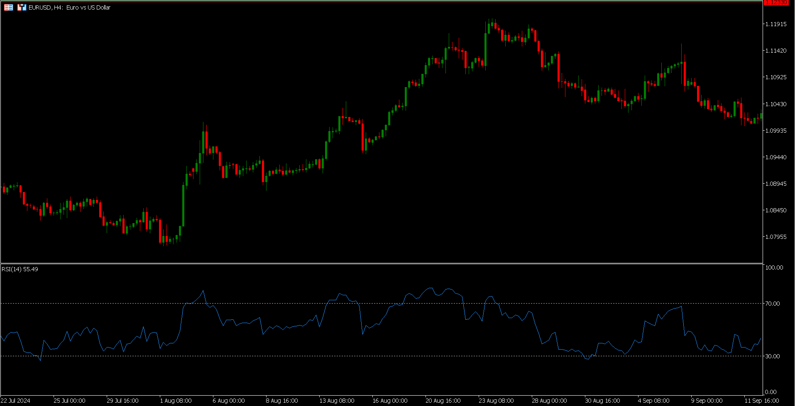

Lesson 4: Technical Analysis Basics
You'll Learn: How to read price charts like professional traders
Understanding Chart Types
Line Chart
Shows closing prices connected in a single line
Candlestick Chart
Visualizes open, high, low, and close prices
Support & Resistance Zones
What Are Support & Resistance?
- Support: Price level where buying interest is strong enough to prevent further decline
- Resistance: Price level where selling pressure is strong enough to prevent further rise
- These levels form because traders remember where prices reversed previously
Support Level
1.04805
1.04805
Resistance Level
1.05265
1.05265
Key Characteristics:
Strength Factors
- More touches = stronger level
- Longer timeframes = more significant
- Volume spikes confirm validity
Real Market Example
EUR/USD bounced 3+ times at 1.04805 support
Think of support/resistance like a basketball court - price bounces between floor (support) and ceiling (resistance)
Identifying Trends
What Makes a Trend?
- Uptrend: Series of higher highs (HH) and higher lows (HL)
- Downtrend: Series of lower highs (LH) and lower lows (LL)
- Sideways: Price moves between horizontal support/resistance
Uptrend Features
- Price stays above rising trendline
- Moving averages slope upward
- Bullish chart patterns (cup & handle, flags)
Downtrend Features
- Price stays below descending trendline
- Moving averages slope downward
- Bearish chart patterns (head & shoulders, triangles)
Pro Trading Tips:
Trends exist in all timeframes - daily trends are stronger than hourly
Average trend duration: 3-6 months for major currencies
Key Indicators
Moving Averages (MA)
Types of MA
- SMA: Simple MA (average closing prices)
- EMA: Exponential MA (weights recent prices more)
Common Uses
- 50 & 200 MA crossover signals trend changes
- Price above MA = uptrend confirmation
- Dynamic support/resistance levels
Current Chart: 200 SMA (green) acts as resistance, 50 EMA (red) acts as support

Relative Strength Index (RSI)
Key Levels
- Overbought: Above 70
- Oversold: Below 30
- Divergence signals reversals
Calculation
RSI = 100 - (100 / (1 + Average Gain / Average Loss))
Typically calculated over 14 periods
Current Chart: RSI bouncing from 30 indicates potential bullish reversal
Remember: Indicators lag price action - always confirm with price patterns!